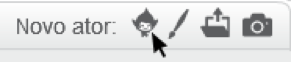
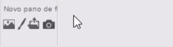
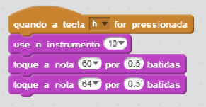
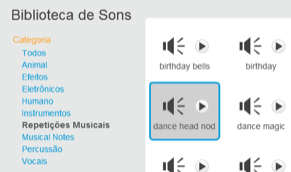
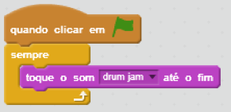

Continue jogando
ADICIONE MAIS ATORES
Você pode adicionar e animar mais instrumentos, cantores, dançarinos, ou outros atores.

ADICIONE UM PANO DE FUNDO
Clique no ícone para abrir a biblioteca de panos de fundo:

REPRODUZA NOTAS
Outra forma de fazer música é usar o bloco toque a nota.
Experimente um script como esse:

Você pode escolher o instrumento e as notas que quiser. Você também pode alterar o tempo.
ADICIONE UM LAÇO DE MÚSICA
Escolha o ator ‘alto falante’ ou algum outro:

Escolha um laço de som de bateria na biblioteca de sons:

Faça seu som se repetir adicionando um script como esse:

VOCÊ TEM UM MAKEY MAKEY?
Conecte seu projeto a um Makey Makey. Você pode criar instrumentos musicais a partir de moedas, argila, cartolina, e muito mais! Para descobrir mais, veja Makey Makey e Scratch.